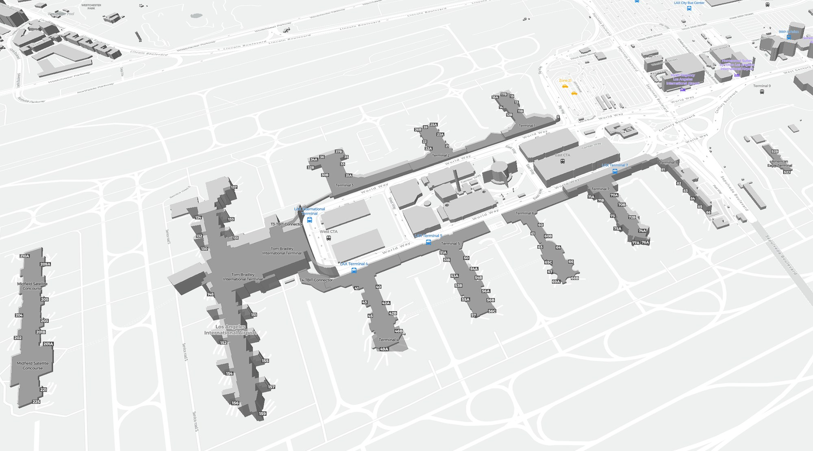

Season 01 · 1 Sep — 31 Dec 2026 · Chief Executive
Make LAX the number one airport in the world
Newest on the board
The airport you run
Los Angeles International
Nine terminals, a Historic-Cultural Monument in the middle of the horseshoe, and fifteen glass pylons that tell you when you have arrived. Every photo is shown whole — tap one to open it full screen, then zoom in as far as you like.
Flight schedule · 122 days
Your daily board
File your plan, push back, then tick flights off as the day goes. Plan as freely as you like beforehand — once the day is running, every change to the plan costs 4 points. Log the day and a new route opens, whatever the score.
Animated route map
Where your days are taking you
Every route you open is drawn from LAX to its city, on a world map and a U.S. map. Replay your season to watch the network grow day by day, or tap any city to fly it.
Airport performance report
How LAX is doing under you
Five indicators, recomputed from every day you log. They start tiny — LAX on a skeleton schedule — and only reach world-beating levels if you keep showing up and keep your plans. All figures are annualised run-rates.
Boarding passes
Every route you have opened
Every logged day opens the next route on the list, starting with the small seasonal runs and building to the busiest flights on earth. All 122 are real routes flown by real airlines. Tap a logo to see it full size, or a pass to fly it on the map.
Airport diagram
Walk the airfield
The real LAX layout. Drag to move around, scroll or pinch to zoom, and tap any marker to see what happens in that building — including which of your routes depart from it.

Keep flying · whatever the weather
Turbulence is temporary. The flight plan is not.
The pilot's creed
Five habits that win seasons
How the game works
Your briefing, Chief Executive
You have just been made the boss of Los Angeles World Airports. LAX is running a skeleton schedule — a few regional hops a day. Your job is to turn it into the busiest airport on earth, and the only way to do it is by looking after your own days first.
📝 File the plan
Write your tasks on the board and drag them onto the 24-hour planner. Before the day runs, editing is free — move, resize, rename, delete as much as you like.
🛫 Push back
Press Push back to lock the plan, or simply tick your first task. The day is now in operation.
⚠️ Revisions cost 4
While the day is running, every change to the plan — adding, deleting, renaming or re-timing a task — costs 4 points and dents reliability. Ticking tasks off is always free.
✅ Log the day
Log it at the end of the day. Points are scored, the indicators update, and a new route opens no matter how the day went.
How points work
You do not need a perfect day to score. You just need to get past half.
122 days × 16 points = 1,952 points for a perfect season. A day's score is its tier minus 4 per revision, so it can dip below zero — that is the price of changing course mid-flight, and it is meant to sting a little.
Nothing is lost. A logged day with nothing ticked still opens its route and keeps your season moving. A gap between logged days counts as a day of zero quality for reliability — it dips by about 5%, and three good days put it back. You can always go back and fill in a past day.
A word from Los Angeles
Five people worth listening to
On the days when the list feels heavy, put one of these on. They are all voices from this city, and none of them got where they were going in a straight line. Nothing loads until you press play.
Beyond the terminal
Discover Los Angeles
Around 74 million people passed through LAX in 2025, and a lot of them only ever saw the inside of it. Here is what is waiting outside the doors.
What makes this city different
Los Angeles is not really one city. It is dozens of neighbourhoods that grew until they touched, spread across a basin between the mountains and the Pacific. That is why nobody agrees on what LA "is" — Santa Monica and Boyle Heights and Pasadena feel like different countries, and all three are twenty minutes from somewhere completely unlike them.
A few things everyone gets right: you can surf and see snow on the same day. More than 200 languages are spoken here. The food is the best argument for the place — tacos, Korean barbecue, Thai Town, Persian Westwood, Oaxacan Koreatown. And the light in the late afternoon really is like that.
Seven guides
Where to actually go
Start with the first if you have never been, then work down. Nothing loads until you press play.
Straight off the plane
South of the airport: Manhattan Beach and Hermosa Beach are ten minutes away — the closest real
beach towns to the terminal.
North: Venice and Santa Monica, twenty minutes up Lincoln Boulevard. Boardwalk, pier, and the
end of Route 66.
East: Downtown LA, Koreatown and the museums along Wilshire. The Metro C and K lines connect to
the airport people mover.
If you only have a couple of hours: stay in the terminal and look at the Theme Building from the
window. It has been standing there since 1961 and it still looks like the future.
Controls
Settings
Everything here saves the moment you change it.
08.00-09.30 to give it a time block; blocks can run up to 24.00.Saved to localStorage in this browser, on this device only. Nothing is sent anywhere and there is no account. Clearing your browser data will clear this too, so download a copy if the season matters to you.